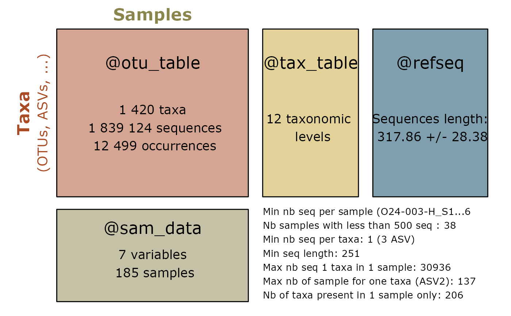

Re-cluster sequences of an object of class physeq or cluster a list of DNA sequences using SWARM
Source: R/vsearch.R
swarm_clustering.Rd
A wrapper of SWARM software.
Usage
swarm_clustering(
physeq = NULL,
dna_seq = NULL,
d = 1,
swarmpath = "swarm",
vsearch_path = "vsearch",
nproc = 1,
swarm_args = "--fastidious",
tax_adjust = 0,
keep_temporary_files = FALSE
)Arguments
- physeq
(required): a
phyloseq-classobject obtained using thephyloseqpackage.- dna_seq
NOT WORKING FOR THE MOMENT You may directly use a character vector of DNA sequences in place of physeq args. When physeq is set, dna sequences take the value of
physeq@refseq- d
(default: 1) maximum number of differences allowed between two amplicons, meaning that two amplicons will be grouped if they have
d(or less) differences- swarmpath
(default: swarm) path to swarm
- vsearch_path
(default: vsearch) path to vsearch, used only if physeq is NULL and dna_seq is provided.
- nproc
(default: 1) Set to number of cpus/processors to use for the clustering
- swarm_args
(default : "–fastidious") a one length character element defining other parameters to passed on to swarm See other possible methods in the SWARM pdf manual
- tax_adjust
(Default 0) See the man page of
merge_taxa_vec()for more details. To conserved the taxonomic rank of the most abundant ASV,- keep_temporary_files
(logical, default: FALSE) Do we keep temporary files ?
temp.fasta (refseq in fasta or dna_seq sequences)
temp_output (classical output of SWARM)
temp_uclust (clusters output of SWARM)
Details
This function use the merge_taxa_vec function to
merge taxa into clusters. By default tax_adjust = 0. See the man page
of merge_taxa_vec().
This function is mainly a wrapper of the work of others. Please cite SWARM.
References
SWARM can be downloaded from https://github.com/torognes/swarm/.
SWARM can be downloaded from https://github.com/torognes/swarm. More information in the associated publications doi:10.1093/bioinformatics/btab493 and doi:10.7717/peerj.593
Examples
summary_plot_pq(data_fungi)
#> Cleaning suppress 0 taxa and 0 samples.

system2("swarm", "-h")
data_fungi_swarm <- swarm_clustering(data_fungi)
summary_plot_pq(data_fungi_swarm)
#> Cleaning suppress 0 taxa and 0 samples.
sequences_ex <- c(
"TACCTATGTTGCCTTGGCGGCTAAACCTACCCGGGATTTGATGGGGCGAATTAATAACGAATTCATTGAATCA",
"TACCTATGTTGCCTTGGCGGCTAAACCTACCCGGGATTTGATGGGGCGAATTACCTGGTAAGGCCCACTT",
"TACCTATGTTGCCTTGGCGGCTAAACCTACCCGGGATTTGATGGGGCGAATTACCTGGTAGAGGTG",
"TACCTATGTTGCCTTGGCGGCTAAACCTACC",
"CGGGATTTGATGGCGAATTACCTGGTATTTTAGCCCACTTACCCGGTACCATGAGGTG",
"GCGGCTAAACCTACCCGGGATTTGATGGCGAATTACCTGG",
"GCGGCTAAACCTACCCGGGATTTGATGGCGAATTACAAAG",
"GCGGCTAAACCTACCCGGGATTTGATGGCGAATTACAAAG",
"GCGGCTAAACCTACCCGGGATTTGATGGCGAATTACAAAG"
)
sequences_ex_swarm <- swarm_clustering(
dna_seq = sequences_ex
)